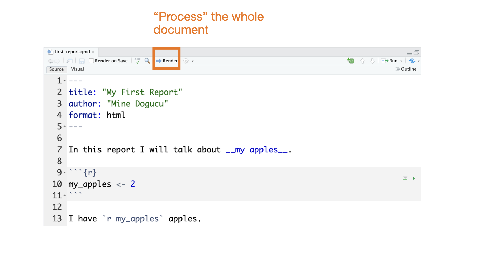
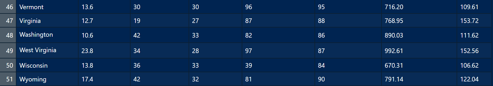

Introduction to Stats 67 and Data
Getting to Know Each Other
Merhaba
Hello
Private Sub Form_Load() MsgBox "Hello, World!" End Sub
Hallo
مرحبا
print('Hello world')
नमस्ते & السلام عليكم
print("Hello world")
<html> Hello world</html>
¡Hola!
سلام
Meet and Greet Each Other
In groups three or four meet and greet each other.
Include
Your name
Your year
I live …
My favorite thing about UCI is …
I am awesome because …
Find something in common between all of you by expanding the conversation.
Find a difference.
Getting to Know the Course
The most important thing about this course
Poll Everywhere
What is Statistics?
Think üí≠ - Pair üë´üèΩ - Share üí¨
What do you think statistics is about and what will we learn in this course? There is no right or wrong answer.
How to be successful in this course
- Be punctual
- Be organized
- Do the work
How to make your professor happy
- Be kind
- Be honest
Getting to Know the Toolbox
hello woRld
Object assignment operator
| Windows | Mac | |
|---|---|---|
| Shortcut | Alt + - | Option + - |
R is case-sensitive
If something comes in quotes, it is not defined in R.
Vocabulary
do() is a function;
something is the argument of the function.
Getting Help
In order to get any help we can use ? followed by function (or object) name.
tidyverse_style_guide
canyoureadthissentence?
tidyverse_style_guide
After function names do not leave any spaces.
Before and after operators (e.g. <-, =) leave spaces.
Put a space after a comma, not before.
Object names are all lower case, with words separated by an underscore.
Tip
You can let RStudio do the indentation for your code.
RStudio Setup
Quarto
markdown
_Hello world_
__Hello world__
~~Hello world~~ Hello world
Hello world
Hello world
Quarto parts

Quarto parts
Quarto parts
Quarto parts
Quarto parts
Quarto parts

Quarto parts

Slides for this course
Slides that you are currently looking at are also written in Quarto. You can take a look at them on GitHub repo for the course website.
Tip
At the beginning of the quarter, we will provide starter .qmd files for you for lectures and discussions. Some of the code in these files may or may not make sense as it might be beyond the scope of this course. As you learn more about R, you’ll sometimes have to start coding from scratch without any starter help. You should download these files and render them and use them to take notes.
File naming
1a Week 1 lecture on Tuesday
1b Week 1 lecture on Thursday
1d Week 1 discussion
1h Week 1 homework
Getting to Know Data
Data Matrices


Data Matrices
The data matrix has 8 variables (state, num_drivers, perc_speeding, perc_not_distracted, perc_no_previous, insurance_premiums, losses).
The data matrix has 51 cases or observations. Each case represents a US state (or District of Columbia).
Data documentation
state State
num_drivers Number of drivers involved in fatal collisions per billion miles
perc_speeding Percentage of drivers involved in fatal collisions who were speeding
perc_alcohol Percentage of drivers involved in fatal collisions who were alcohol-impaired
perc_not_distracted Percentage of drivers involved in fatal collisions who were not distracted
perc_no_previous Percentage of drivers involved in fatal collisions who had not been involved in any previous accidents
insurance_premiums Car insurance premiums ($)
losses Losses incurred by insurance companies for collisions per insured driver ($)
Source National Highway Traffic Safety Administration 2012, National Highway Traffic Safety Administration 2009 & 2012, National Association of Insurance Commissioners 2010 & 2011.
# A tibble: 6 × 8
state num_drivers perc_speeding perc_alcohol perc_not_distracted
<chr> <dbl> <int> <int> <int>
1 Alabama 18.8 39 30 96
2 Alaska 18.1 41 25 90
3 Arizona 18.6 35 28 84
4 Arkansas 22.4 18 26 94
5 California 12 35 28 91
6 Colorado 13.6 37 28 79
# ℹ 3 more variables: perc_no_previous <int>, insurance_premiums <dbl>,
# losses <dbl># A tibble: 6 × 8
state num_drivers perc_speeding perc_alcohol perc_not_distracted
<chr> <dbl> <int> <int> <int>
1 Vermont 13.6 30 30 96
2 Virginia 12.7 19 27 87
3 Washington 10.6 42 33 82
4 West Virginia 23.8 34 28 97
5 Wisconsin 13.8 36 33 39
6 Wyoming 17.4 42 32 81
# ℹ 3 more variables: perc_no_previous <int>, insurance_premiums <dbl>,
# losses <dbl>Rows: 51
Columns: 8
$ state <chr> "Alabama", "Alaska", "Arizona", "Arkansas", "Calif…
$ num_drivers <dbl> 18.8, 18.1, 18.6, 22.4, 12.0, 13.6, 10.8, 16.2, 5.…
$ perc_speeding <int> 39, 41, 35, 18, 35, 37, 46, 38, 34, 21, 19, 54, 36…
$ perc_alcohol <int> 30, 25, 28, 26, 28, 28, 36, 30, 27, 29, 25, 41, 29…
$ perc_not_distracted <int> 96, 90, 84, 94, 91, 79, 87, 87, 100, 92, 95, 82, 8…
$ perc_no_previous <int> 80, 94, 96, 95, 89, 95, 82, 99, 100, 94, 93, 87, 9…
$ insurance_premiums <dbl> 784.55, 1053.48, 899.47, 827.34, 878.41, 835.50, 1…
$ losses <dbl> 145.08, 133.93, 110.35, 142.39, 165.63, 139.91, 16…Variables


Variables
Variables sugarpercent, pricepercent, and winpercent are numerical variables.
We can do certain analyses on these variables such as finding an average winpercent or the maximum or minimum winpercent.
Note: Not everything represented by numbers is a numeric variable. e.g. Student ID number is not a numeric variable.
Variables
Variables such as competitorname, chocolate, and fruity are categorical variables.
We cannot take averages or find maximum or minimum of these variables.
Categorical variables have levels. For instance chocolate and fruity both have two levels as TRUE and FALSE.
Categorical Variables
If the levels of the categorical variable has a comparable ordering then it is called an ordinal variable.
e.g. variable scholarship_status might have three levels as no scholarship, partial scholarship and full scholarship. We can order these levels from less to more or vice versa.
If there is no ordering then a categorical variable would be called a nominal variable. e.g. state names.
Numeric Variables
Consider a variable n_kids which represents number of kids somebody has. Then this variable can take values (0, 1, 2, …). Notice that this variable can take only integer values. This variable is said to be discrete since it does not take on infinitely many numbers that we are not able to count.
Numeric variables that can take infinitely many numbers are said to be continuous. Consider somebody’s height in cm. This is a continuous variable. Even though we might say somebody is 173 cm, in reality the height could be 170.612476314631 cm. So height can take infinitely many values.